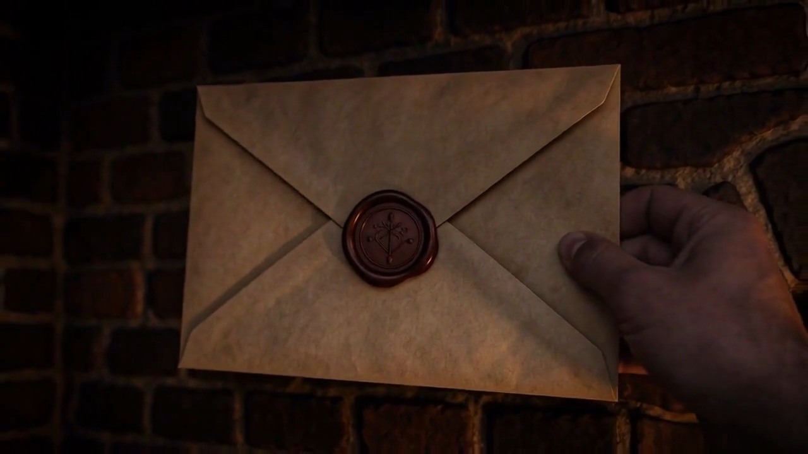

ARCHIVE
AN INTERACTIVE MYSTERY
A LETTER LEFT BEHIND. A STORY WAITING.
Some secrets
are meant to be opened.
Follow the lanterns. Find the envelope.
Discover what lies beneath the seal.
A SHORT, INTERACTIVE EXPERIENCE • HEADPHONES RECOMMENDED
01 / THE ARRIVAL
A message, waiting for you.
Click the envelope to pick it up.